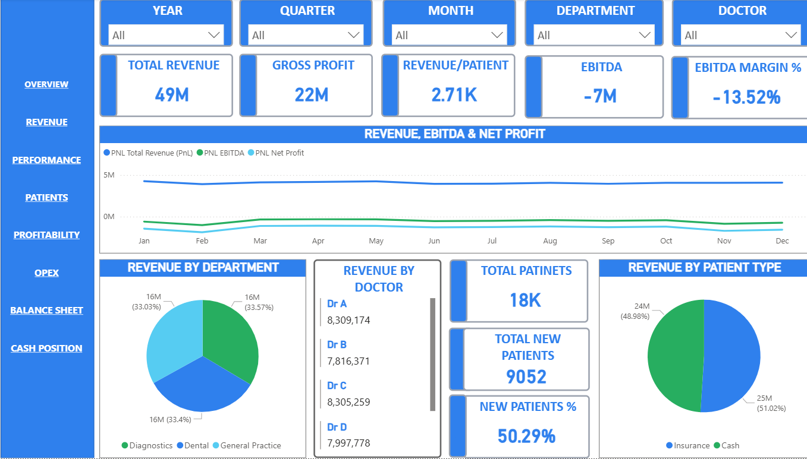
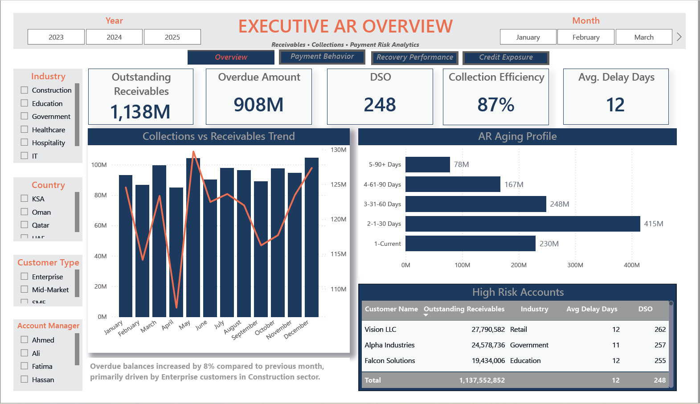
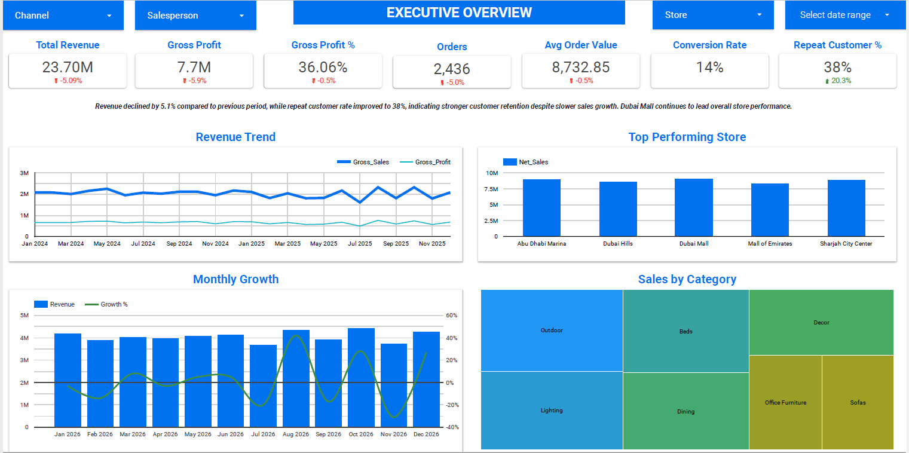

Executive healthcare analytics dashboard covering revenue, profitability, patient analytics, balance sheet performance and cash position monitoring.

Interactive receivables dashboard focused on collections performance, aging analysis, overdue tracking, customer payment trends and working capital visibility.

Executive retail analytics dashboard built to provide visibility into sales performance, profitability, customer trends and executive KPIs.
LinkedIn:
linkedin.com/in/zainab-abbass
GitHub:
github.com/zainab-abbass